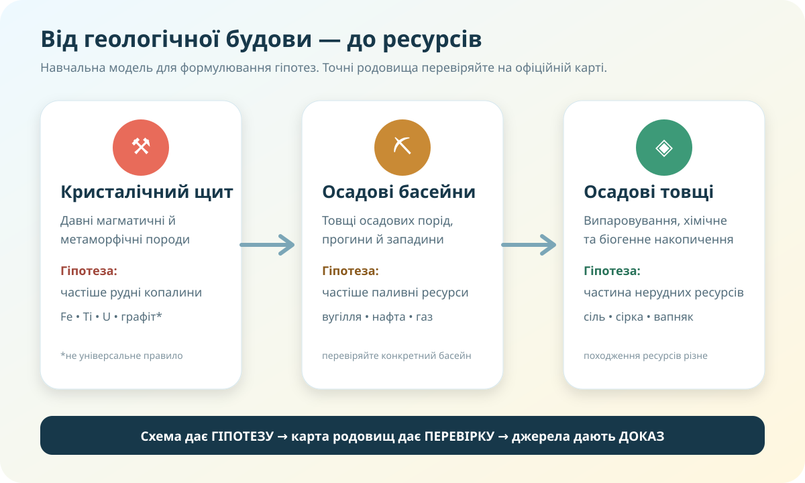

Чому родовища не розсипані по Україні випадково?
Уявіть: геологічна компанія має дані лише про будову земної кори, але ще не бачить карти родовищ. Де логічніше шукати залізні руди? Де — нафту й газ? Чи можна це передбачити хоча б приблизно?
У давніх кристалічних породах Українського щита Ви швидше очікуєте знайти…
Спочатку модель. Потім — перевірка реальними даними

Давні кристалічні масиви частіше пов’язані з рудними ресурсами.
Потужні осадові басейни й западини можуть бути сприятливими для паливних ресурсів.
Частина нерудних ресурсів утворюється в осадових товщах, але їх походження дуже різне.
Перевіряємо гіпотезу на офіційних геоданих
1. «Мінеральні ресурси України»
Відкрийте інтерактивний портал, увімкніть шар родовищ або тип корисної копалини. Оберіть щонайменше два різні ресурси і простежте, чи утворюють вони просторові скупчення.
Офіційна карта ресурсів ↗Портал пов’язаний із Держгеонадрами та містить інформацію про родовища, запаси і спеціальні дозволи.
2. Велика українська енциклопедія
Для одного ресурсу знайдіть коротку довідку: що це за корисна копалина, як утворюється, де використовується. Не копіюйте абзац — випишіть 3 факти своїми словами.
Шукати у ВУЕ ↗| Що досліджуємо | Доказ із карти | Геологічне пояснення | Висновок |
|---|---|---|---|
| Залізні руди | |||
| Нафта / газ або вугілля |
Україна ↔ Австралія: однакова логіка чи збіг?
КТП пропонує перевірити подібність тектонічної будови й закономірностей поширення ресурсів України та Австралії. Тут важлива не кількість назв, а структура аргументу.
Крок 1. Основа
В обох країнах знайдіть давні платформні/кристалічні ділянки та молодші осадові басейни.
Крок 2. Ресурси
Перевірте, де концентруються залізні руди, інші металеві руди, вугілля, нафта чи газ.
Крок 3. Пояснення
Сформулюйте не «там є руда», а «тип геологічної будови створив умови для…».
Claim: чи можна сказати, що в Україні й Австралії працює подібна загальна закономірність?
Evidence: наведіть по одному просторовому прикладу з кожної країни.
Reasoning: поясніть, чому ці приклади пов’язані з геологічною будовою.
Родовища — це ресурс. Видобуток — це втручання в геосистему
Зміна рельєфу, пил, шум, відвали, фрагментація ландшафту.
Терикони, шахтні води, просідання, ризики забруднення.
Ризики витоків, порушення ґрунтів і вод, інфраструктурний слід.
Рекультивація, моніторинг вод, стабілізація відвалів, нове використання території.
Тепер узагальнюємо закономірності
Паливні
Вугілля, нафта, природний газ, торф. Для багатьох ключове значення мають осадові басейни, умови накопичення органічної речовини, поховання та перетворення.
Рудні
Залізні, марганцеві, титанові, уранові та інші руди. Їх поширення часто пов’язане з давніми кристалічними комплексами, магматичними й метаморфічними процесами.
Нерудні
Кам’яна сіль, сірка, графіт, каолін, вапняк, будівельна сировина. Походження дуже різне, тому однієї «універсальної» тектонічної формули тут немає.
Візуальне узагальнення: рудні й нерудні ресурси
Дивимося не пасивно
Увімкніть приблизно 3–4 хвилини фрагмента і зафіксуйте:
Відео — допоміжне джерело. Якщо твердження суперечить офіційній карті чи сучасним даним, пріоритет мають перевірені джерела.
Тест: 10 завдань = 10 балів
Спочатку ідентифікуйте роботу. Після цього відкриється тест.
Фінальний висновок: одна теза, три докази
C — Claim
Сформулюйте тезу: «Розміщення корисних копалин України закономірне, тому що…»
E — Evidence
Наведіть 3 докази: один рудний ресурс, один паливний, один факт із карти/джерела.
R — Reasoning
Поясніть механізм: як геологічна будова та історія пов’язані з цими ресурсами.
Теза точна, 3 релевантні докази, пояснено причинний зв’язок.
Докази є, але пояснення частково описове.
Є загальна думка без перевірених картографічних доказів.
Міні-досьє на одну корисну копалину
Обов’язковий рівень
1. Опрацюйте відповідний параграф електронного підручника.
2. Оберіть одну корисну копалину України.
3. У ВУЕ або іншому надійному джерелі знайдіть: походження, використання, одну область поширення.
4. На офіційній карті знайдіть конкретний приклад родовища/басейну.
Рівень «дослідник»
Додайте один екологічний ризик видобутку та запропонуйте реалістичний захід його зменшення. Завершіть двома реченнями: «Чому родовище розташоване саме тут?»
Формат: 1 сторінка / 1 слайд / коротка цифрова картка. Обов’язково вкажіть 2 джерела.